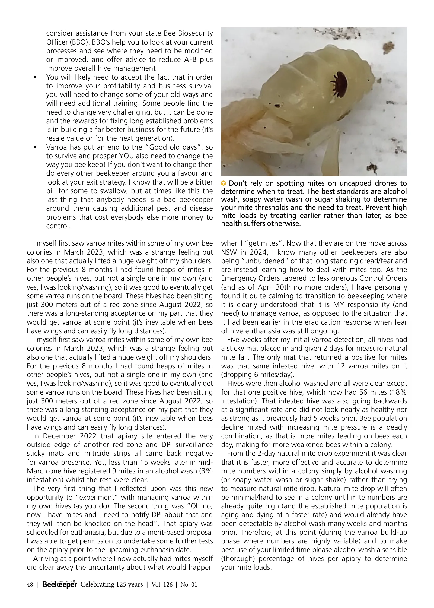

consider assistance from your state Bee Biosecurity
Officer (BBO). BBO’s help you to look at your current
processes and see where they need to be modified
or improved, and offer advice to reduce AFB plus
improve overall hive management.
•
You will likely need to accept the fact that in order
to improve your profitability and business survival
you will need to change some of your old ways and
will need additional training. Some people find the
need to change very challenging, but it can be done
and the rewards for fixing long established problems
is in building a far better business for the future (it’s
resale value or for the next generation).
•
Varroa has put an end to the “Good old days”, so
to survive and prosper YOU also need to change the
way you bee keep! If you don’t want to change then
do every other beekeeper around you a favour and
look at your exit strategy. I know that will be a bitter
pill for some to swallow, but at times like this the
last thing that anybody needs is a bad beekeeper
around them causing additional pest and disease
problems that cost everybody else more money to
control.
I myself first saw varroa mites within some of my own bee
colonies in March 2023, which was a strange feeling but
also one that actually lifted a huge weight off my shoulders.
For the previous 8 months I had found heaps of mites in
other people’s hives, but not a single one in my own (and
yes, I was looking/washing), so it was good to eventually get
some varroa runs on the board. These hives had been sitting
just 300 meters out of a red zone since August 2022, so
there was a long-standing acceptance on my part that they
would get varroa at some point (it’s inevitable when bees
have wings and can easily fly long distances).
I myself first saw varroa mites within some of my own bee
colonies in March 2023, which was a strange feeling but
also one that actually lifted a huge weight off my shoulders.
For the previous 8 months I had found heaps of mites in
other people’s hives, but not a single one in my own (and
yes, I was looking/washing), so it was good to eventually get
some varroa runs on the board. These hives had been sitting
just 300 meters out of a red zone since August 2022, so
there was a long-standing acceptance on my part that they
would get varroa at some point (it’s inevitable when bees
have wings and can easily fly long distances).
In December 2022 that apiary site entered the very
outside edge of another red zone and DPI surveillance
sticky mats and miticide strips all came back negative
for varroa presence. Yet, less than 15 weeks later in mid-
March one hive registered 9 mites in an alcohol wash (3%
infestation) whilst the rest were clear.
The very first thing that I reflected upon was this new
opportunity to “experiment” with managing varroa within
my own hives (as you do). The second thing was “Oh no,
now I have mites and I need to notify DPI about that and
they will then be knocked on the head”. That apiary was
scheduled for euthanasia, but due to a merit-based proposal
I was able to get permission to undertake some further tests
on the apiary prior to the upcoming euthanasia date.
Arriving at a point where I now actually had mites myself
did clear away the uncertainty about what would happen
when I “get mites”. Now that they are on the move across
NSW in 2024, I know many other beekeepers are also
being “unburdened” of that long standing dread/fear and
are instead learning how to deal with mites too. As the
Emergency Orders tapered to less onerous Control Orders
(and as of April 30th no more orders), I have personally
found it quite calming to transition to beekeeping where
it is clearly understood that it is MY responsibility (and
need) to manage varroa, as opposed to the situation that
it had been earlier in the eradication response when fear
of hive euthanasia was still ongoing.
Five weeks after my initial Varroa detection, all hives had
a sticky mat placed in and given 2 days for measure natural
mite fall. The only mat that returned a positive for mites
was that same infested hive, with 12 varroa mites on it
(dropping 6 mites/day).
Hives were then alcohol washed and all were clear except
for that one positive hive, which now had 56 mites (18%
infestation). That infested hive was also going backwards
at a significant rate and did not look nearly as healthy nor
as strong as it previously had 5 weeks prior. Bee population
decline mixed with increasing mite pressure is a deadly
combination, as that is more mites feeding on bees each
day, making for more weakened bees within a colony.
From the 2-day natural mite drop experiment it was clear
that it is faster, more effective and accurate to determine
mite numbers within a colony simply by alcohol washing
(or soapy water wash or sugar shake) rather than trying
to measure natural mite drop. Natural mite drop will often
be minimal/hard to see in a colony until mite numbers are
already quite high (and the established mite population is
aging and dying at a faster rate) and would already have
been detectable by alcohol wash many weeks and months
prior. Therefore, at this point (during the varroa build-up
phase where numbers are highly variable) and to make
best use of your limited time please alcohol wash a sensible
(thorough) percentage of hives per apiary to determine
your mite loads.
Don’t rely on spotting mites on uncapped drones to
determine when to treat. The best standards are alcohol
wash, soapy water wash or sugar shaking to determine
your mite thresholds and the need to treat. Prevent high
mite loads by treating earlier rather than later, as bee
health suffers otherwise.
48 |
Celebrating 125 years | Vol. 126 | No. 01